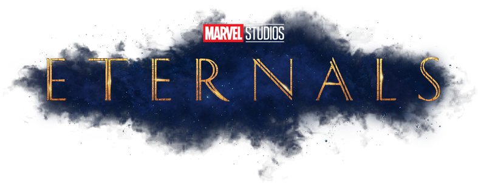

Resumen: What If...? es una próxima serie web animada de antología estadounidense creada para
Disney+, basada en la serie de Marvel Comics del mismo nombre. Explorará lo que sucedería si los principales momentos de las películas del Universo Cinematográfico de Marvel ocurrieran de manera diferente.
Estreno: 10 de Agosto de 2021
Trailer:
Eternals

Resumen: Eternals es una próxima película estadounidense de superhéroes basada en Los Eternos,
confirmada oficialmente en la Convención Internacional de Cómics de San Diego, producida por Marvel
Studios y distribuida por Walt Disney Studios Motion Pictures.
Estreno: 28 de Octubre de 2021
Trailer:
Spider-man: No Way Home
Resumen: Después de que la identidad de Peter Parker como Spider-Man es expuesta por Mysterio al final de Spider-Man: Lejos de casa, la vida y la reputación de Parker son puestas patas arriba. Para arreglar este asunto, Peter decide contactar al Dr. Stephen Strange para que este lo ayude a restaurar su antigua identidad secreta con magia, pero a raíz de esto, se provoca una fractura en el multiverso, causando que supervillanos de otras realidades alternas (que previamente han luchado contra un Spider-Man en sus respectivas dimensiones) ingresen a su universo.